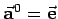
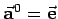
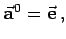
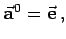
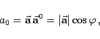
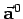
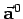
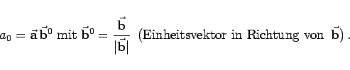

Inhalt Index DeskTop Bronstein

 Geometrie Vektoralgebra und analytische Geometrie Vektoralgebra Koordinaten eines Vektors
Geometrie Vektoralgebra und analytische Geometrie Vektoralgebra Koordinaten eines Vektors


Richtungskoeffizient oder Entwicklungskoeffizient des Vektors  in Richtung oder entlang des Einheitsvektors  nennt man die Projektion von
in Richtung oder entlang des Einheitsvektors  nennt man die Projektion von  auf  d.h. das Skalarprodukt
auf  d.h. das Skalarprodukt
|  | (3.270a) |
wobei  der Winkel zwischen
der Winkel zwischen  und  ist.
und  ist.
Für den Richtungskoeffizienten des Vektors  entlang eines Vektors
entlang eines Vektors  gilt:
gilt:
|  | (3.270b) |
Im kartesischen Koordinatensystem sind die Richtungskoeffizienten des Vektors  die Komponenten ax,ay,az entlang der x-,y-,z-Achse. In einem nichtorthonormierten Koordinatensystem gilt diese Aussage nicht.
die Komponenten ax,ay,az entlang der x-,y-,z-Achse. In einem nichtorthonormierten Koordinatensystem gilt diese Aussage nicht.